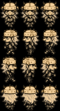
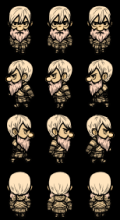
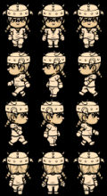

Referências originais
120 × 220 px, exibidas em tamanho nativo. O fundo preto pertence aos arquivos recebidos.



Estudo das três formas de Neral
A aprovação deste estudo define o visual. As folhas de caminhada têm aprovação separada.
Não foi possível carregar o registro. Mantenha galeria-dados.js ao lado deste arquivo e reabra a galeria.